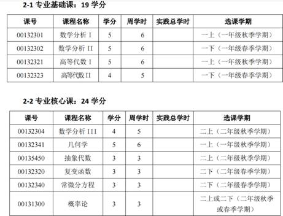
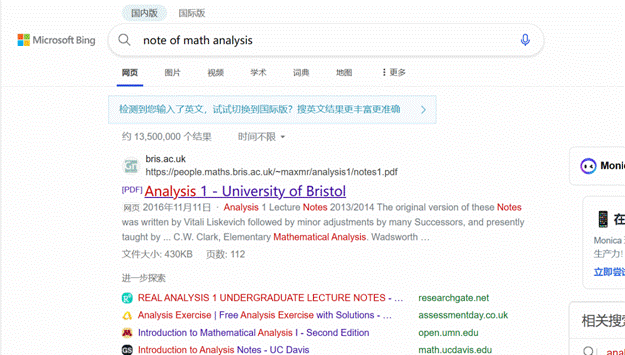

山河数学指南-第一期
作者：数院教员 爱民
“没有学术的自由和民主，科学就不能繁荣”——李醒民
一．开场白：应该如何自学数学？
学数学的过程正是认知事物的过程，不过这种事物是存在于数学世界当中的。
数学发展千年，现代数学已经是一座摩天大楼，如早年论坛中流传的“数学深渊”，任何想领略数学，使用数学，抵达数学前沿的人都需要经过长时间正统框架下的学习和训练（有点像学徒制，对吗？），正需要适当的方法论来引导自己。
注意，这种“正统框架”并不局限于某种具体机构的意见，坐在所谓顶级学府的数学课教室里度过四年或八年才能够获得。我相信，如今互联网上埋藏着的优质信息，已经足以为一个独立自学的人来提供这样的数学训练了，下面我将做一些最开始的介绍。
什么是数学？这个问题在人类史上被千万次提出，争议，我在这里无法给您解答。我相信这个问题是永无定论的，每个学习者都会在一次次领略新的数学的时刻，与他人争执的时刻产生新的感悟。但我可以借此机会向你推荐几个网站。
第一个，知乎。我想指出，知乎现在仍然存在有一些脚踏实地的学习建议，书本建议，数学人的争鸣与感悟，乃至于他们用Tex打出的数学笔记。不过你不能服从于推送机制的控制，而是去主动找到他们。你或许可以窥见中文数学人世界的“众生相”的一面，以及他们的说话方式和思维方式。（之后我会引用一些知乎的资源，这将给我十分有限的介绍做一些补充，希望有志者可以耐心去看看。为方便读者理解，我举的例子会是十分初等的）
第二个,Mathematics Stack Exchange，这是一个英文网页，里面有着十分全面可靠深入的数学学术讨论内容，是更适合你去搜索具体问题时使用的！我在后面会谈为什么要需要使用英文来学习数学。
第三个，Bing。对，你应当使用各种手段的去搜索你所要的（笑），譬如各种优质的论述经验的文章。
第四个，一些英文的数学百科网页，搜索英文名词的时候会弹出来，wiki就不错。
二．如何做学习的准备？
或许你会需要一本教材，甚至是很多本教材。当然你需要选出一本最合你心意的！例如如果你基础薄弱，那么一本温柔的教材会适合你的！下面这个帖子或许可以供你对如何选择教材有最初的印象，以及里面引用的清华大学教师的视频是值得参考的（最好的东西常常是免费的！）。
如何挑选一本适合自己的《数学分析》教科书？ - 知乎 (zhihu.com)
当你发现你无法接受它的时候，这说明还不到接受它的时刻，或者你该换一本写的更好的书了!选择一本好的教材是需要时间的，但不必太长，找到经典的教材和前人对他们的评价，然后在开始阅读后再做判断，或许最多只需一两个小时。
此外，你可能还需要若干学习伙伴，供探讨问题，以及一个学习的引导者。引用数学家Ravi
Vakil的一个建议：你需要一个向他方便的提问的人，不管是问出“聪明”还是“蠢”的问题！我自己的感受是，这能够有效的节约你的时间，让你重新获得理解，以及对于学习的信心。
三．如何去脚踏实地去学数学，做数学？
(25 封私信 / 54 条消息) 如何高效阅读数学专业书？ - 知乎 (zhihu.com)
第一步，如何规划你的学习？数学中的科目有着前后依赖的关系，因此你需要按照一定的顺序才能掌握这个框架（但是注意，这个顺序对每个人都不尽相同！），就像学复变函数之前要学数学分析一样，但抽象代数和概率论谁先谁后似乎就无关系了。
为此你可以去互联网搜索前人的建议。我的一个额外的建议是，去搜索国内顶尖大学数学系的培养方案（下面是北京大学在互联网上公开的），他的开课顺序就是你可以参考的。去搜索吧！

第二，如何去读？
你看到的许多数学书，贯穿始末的或许是定理，例子，证明的循环，毫无疑问，对于一个科目的初学者来说，你有必要去理解和检查具体细节的论证，去使用那些告诉你非平凡事实的定理，去学习那些经典的例子（可微函数是概念，e^x则是例子），以及在一个“具体例子”中计算。比如说，学习对函数求导的时候，当你拿出一个比较复杂的函数（e^x^x）的时候，你真的掌握了把他的导函数算出的能力吗？
因此，你需要通过一些习题去检验自己，一开始你可能需要反思例题中的证明并且模仿他，比较难的习题可能会要求你“重新发现”一个技巧。不过，当你困惑的时候，去搜索（试试看用简单的英文），去请教，并不是一种羞耻的事情。
因为是自学，你便不需要为了过于熟练而做重复的训练，仅仅只需要提前备考时这样做罢了。
除此之外，你也需要对这个科目整个面貌有感性的认识，否则陷入“定理，例子，证明的循环”中，你会有自己只是在学习逻辑推导的幻灭感。比如你学抽象代数这个科目，也可以通过搜索，去理解这个科目在整个数学体系中的地位，以及每个定理的意义。部分温柔的教材会配合大量的描述性语言，来向你解释为什么要建立这一切。如果你会科学上网，那么一些外文的优质视频公开课也可以帮助你去学习他（配自带中文字幕）。
(25 封私信 / 54 条消息) 能否用一句话描述学抽象代数的感觉？ - 知乎 (zhihu.com)
如果你想快速掌握一些重要的内容，可以去搜索大学课程的公开笔记来辅助着阅读，与书相比，或许会精简一些，厚度给人压迫感小一点。以及你可以管中窥豹地知道现在世界上其他地方的学校是如何教授这门课程的，而书籍通常写作时间比较久远，现实中很多课的官方教材其实比较年代久远，观念也不一定先进。

附：为什么要用英语学数学？
数学研究的国际主流语言是英语。大量数学前沿资料、论文以英语出现，使用英语可以直接访问。英语数学词汇量更标准，许多数学词汇的汉语翻译不够标准化。大量顶尖教材和材料，视频资料使用英语。
用英语学数学难吗？
英语不是困难所在，一个数学科目不需要反复大量词汇，而是反复出现的概念性词汇和几乎统一的逻辑术语，只需要一定时间适应，方法则是拿起一本入门教材去看，去习惯这件事。AI时代，描述性语言可使用AI翻译代劳，其实原本划词翻译软件也可。关键是其中优质的数学内容。
学术观点自由，仅从个人有限的眼界出发陈述，学无定法，敬请批评，欢迎在学院里自由讨论！
数院教员
爱民
2023.7.16
于山河大学
|